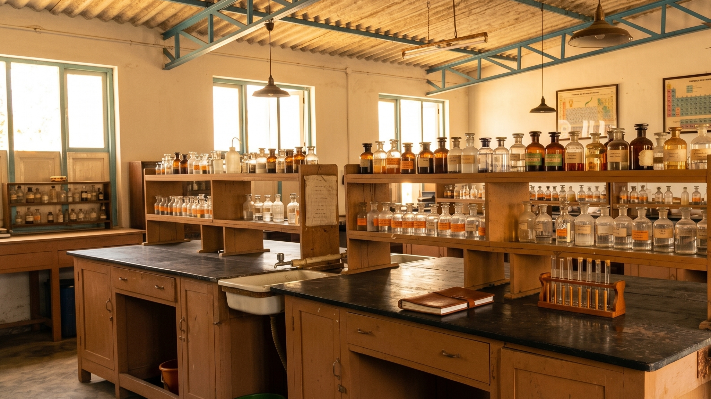

Academic Excellence
Focused D.Pharma training with a history of state-ranking results.
D.Pharma Program Overview
Our Diploma in Pharmacy (D.Pharma) is a full-time, two-year course approved by the Pharmacy Council of India (PCI). The program is designed to provide students with a deep understanding of drug interactions, chemical compositions, and healthcare ethics.
Well-Equipped Infrastructure
True to our legacy, the college possesses a sprawling building of its own with specialized laboratories. Students gain hands-on experience in environments that mirror professional pharmaceutical settings.
- Pharmaceutics Lab: Focused on dosage form design.
- Pharmacology Lab: Understanding drug actions on biological systems.
- Pharmacognosy Lab: Study of medicines derived from natural sources.
- Pharmaceutical Chemistry: Synthesis and analysis of medicinal compounds.

Beyond the Classroom
We believe in enhancing self-confidence through a balance of professional excellence and vibrant campus life.
Sports & Culture
Regular sports, literacy, and cultural competitions are conducted to improve talent and enhance self-confidence. Our annual sports meet concludes with prizes awarded at the college's valedictory function.
Pharmacy Week
Celebrated annually with exhibitions, medical check-ups for the public, and specialized seminars. It is a week dedicated to uplifting the pharmacy profession within the community.
Guest Lectures
To keep our students updated with industry trends, we regularly arrange guest lecturers and seminars featuring experienced pharmacy professionals.